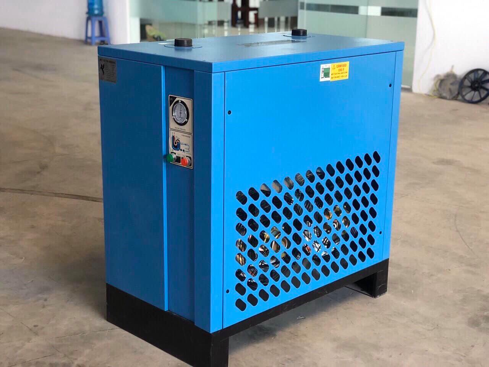
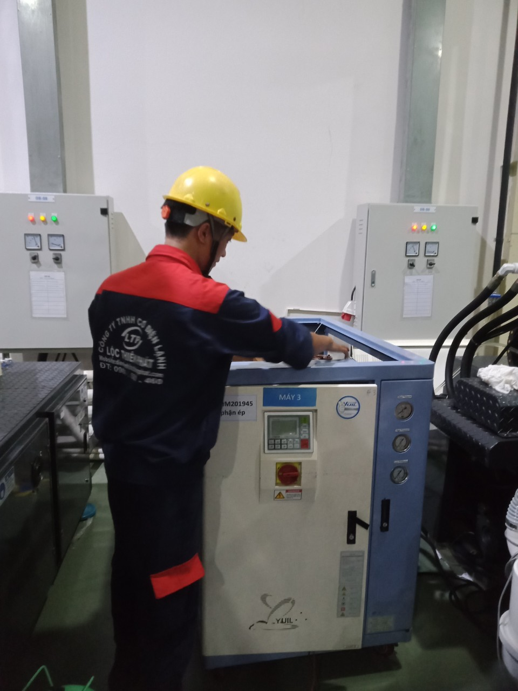

Máy sấy khí là một thiết bị quan trọng trong quy trình sản xuất và xử lý khí. Được thiết kế để loại bỏ độ ẩm và tạp chất từ khí, máy sấy khí đóng vai trò quan trọng trong việc duy trì hiệu suất và độ tin cậy của nhiều ứng dụng công nghiệp. Trong bài viết này, chúng ta sẽ khám phá sâu hơn về máy sấy khí, cách chúng hoạt động, và tại sao chúng là một phần quan trọng của hệ thống khí của bạn.
I .Giới thiệu về Máy sấy khí
1.Giới Thiệu về Máy Sấy Khí

Máy sấy khí, một thiết bị quan trọng trong nhiều ngành công nghiệp, là một cỗ máy đóng vai trò vô cùng quan trọng trong việc quản lý khí. Chúng được thiết kế để thực hiện một nhiệm vụ quan trọng: loại bỏ độ ẩm và tạp chất từ khí. Dường như nhỏ bé, nhưng vai trò của máy sấy khí không thể đánh giá thấp được.
2. Sự Cần Thiết của Máy Sấy Khí Trong Các Ngành Công Nghiệp
Trong một loạt các ngành công nghiệp, máy sấy khí đóng một vai trò không thể thay thế. Hãy tưởng tượng bạn đang làm việc trong ngành thực phẩm, nơi sự an toàn và chất lượng không thể bỏ qua. Máy sấy khí giúp làm khô các thành phần quan trọng trong quy trình sản xuất thực phẩm, đảm bảo không có độ ẩm nào tiếp xúc với sản phẩm cuối cùng. Điều này đồng nghĩa với việc sản phẩm thực phẩm của bạn sẽ được bảo quản tốt hơn, tránh được sự phát triển của vi khuẩn và đảm bảo tính an toàn.
Ví dụ cụ thể:
Hãy xem xét một ví dụ cụ thể: trong ngành điện tử, các vi mạch và linh kiện điện tử cần phải hoạt động ổn định và không bị hỏng hóc. Độ ẩm có thể là một yếu tố gây hỏng hóc nghiêm trọng cho các thiết bị này máy sấy khí giúp duy trì môi trường khô ráo, bảo vệ các thành phần quan trọng và đảm bảo sản phẩm điện tử hoạt động với hiệu suất tối đa.
Như vậy, máy sấy khí không chỉ là một thiết bị, mà là trọng tâm của sự hiệu quả và đáng tin cậy trong nhiều ngành công nghiệp. Chúng tạo điều kiện tối ưu cho quy trình sản xuất và bảo vệ sự an toàn của sản phẩm, đó là lý do tại sao chúng cần được hiểu rõ và tôn trọng.
II. Cách hoạt động của Máy sấy khí
Trong phần này, chúng ta sẽ khám phá cách máy sấy khí hoạt động để hiểu tại sao nó lại trở thành một phần không thể thiếu trong quy trình sản xuất và xử lý khí.
1.Nguyên Lý Hoạt Động:
Máy sấy khí hoạt động dựa trên nguyên lý làm khô bằng sự ngưng tụ. Khí ẩm từ nguồn khí nén hoặc khí tự nhiên được hút vào máy sấy và tiếp xúc với một bộ lọc mạnh mẽ. Bộ lọc này loại bỏ độ ẩm và các tạp chất khỏi khí, biến nó thành khí sạch và khô. Sau đó, khí sạch được cung cấp đến hệ thống điều khiển.
2.Các Thành Phần Chính:
Trong hệ thống máy sấy khí có một số thành phần chính quan trọng:
- Bộ Lọc: Bộ lọc đóng vai trò quan trọng trong việc loại bỏ tạp chất và độ ẩm từ khí, đảm bảo rằng khí ra khỏi máy sấy là khí sạch và khô.
- Bộ Điều Khiển: Bộ điều khiển là bộ não của [Máy Sấy Khí]. Nó giám sát quá trình làm khô và đảm bảo rằng máy hoạt động ổn định và hiệu quả.
- Hệ Thống Làm Lạnh: Hệ thống làm lạnh là một phần quan trọng giúp làm lạnh và ngưng tụ độ ẩm trong khí, biến nó thành nước và loại bỏ khỏi hệ thống.
Như bạn có thể thấy, máy sấy khí không chỉ là một thiết bị đơn thuần, mà là một hệ thống tinh vi đóng vai trò quan trọng trong việc đảm bảo sự hiệu quả và độ tin cậy trong quy trình sản xuất và xử lý khí.
III . Ứng dụng của Máy sấy khí
Trong phần này, chúng tôi sẽ bật mí về sự đa dạng và quan trọng của máy sấy khí trong nhiều ngành công nghiệp và ứng dụng cụ thể. Hãy cùng đi sâu vào thế giới của máy sấy khí.
1.Trong sản xuất:
Máy sấy khí đóng vai trò quan trọng trong ngành sản xuất.

Máy sấy trong sản xuất
Ví dụ :
1.Trong sản xuất thực phẩm, nó giúp bảo quản chất lượng và an toàn thực phẩm bằng cách loại bỏ độ ẩm, ngăn sự phát triển của vi khuẩn và mục tiêu tăng cường sự lưu trữ và vận chuyển.
2.Trong lĩnh vực điện tử, máy sấy khí đảm bảo rằng các linh kiện không bị ảnh hưởng bởi độ ẩm, giữ cho thiết bị hoạt động ổn định và đáng tin cậy.
2.Trong ngành y tế:

Trong ngành y tế, độ tin cậy và sự an toàn là ưu tiên hàng đầu.
Máy sấy khí đóng vai trò quan trọng trong việc làm khô và làm sạch các dụng cụ y tế và thiết bị y tế. Nó giúp ngăn tình trạng nhiễm khuẩn và bảo vệ sức khỏe của bệnh nhân.
3.Trong ngành thực phẩm:

Máy sấy khi trong ngành thực phẩm
Trong lĩnh vực thực phẩm, sự an toàn và chất lượng không thể bỏ qua. Máy sấy khí được sử dụng để làm khô và bảo quản thực phẩm, từ đó đảm bảo rằng sản phẩm không bị ô nhiễm độ ẩm và an toàn cho người tiêu dùng. Điều này đồng nghĩa với việc máy sấy khí có vai trò quyết định đối với sự thành công của ngành thực phẩm.
Như vậy, máy sấy khí không chỉ là một thiết bị, mà là người bạn đồng hành đáng tin cậy trong nhiều ngành công nghiệp. Từ sản xuất đến y tế và thực phẩm, nó đóng vai trò quan trọng trong việc bảo vệ sự an toàn và chất lượng sản phẩm và dịch vụ.
IV. Lợi ích của việc sử dụng Máy sấy khí
Trong phần này, chúng tôi sẽ đưa ra một loạt các lợi ích thuyết phục của việc sử dụng máy sấy khí, và tại sao nó là một quyết định thông minh cho cả công nghiệp và cuộc sống cá nhân.
1. Tiết Kiệm Năng Lượng:
Một trong những lợi ích nổi bật nhất của việc sử dụng máy sấy khí là tiết kiệm năng lượng.
Thiết bị này giúp loại bỏ độ ẩm từ khí nén, làm cho hệ thống làm việc hiệu quả hơn. Khi khí sạch và khô, máy nén không cần làm việc nhiều hơn để duy trì áp suất cần thiết. Điều này dẫn đến tiết kiệm đáng kể trong năng lượng và giảm hóa đơn điện.
2.Tăng Hiệu Suất Sản Xuất:
Máy sấy khí đóng vai trò quan trọng trong việc tăng hiệu suất sản xuất. Nhờ loại bỏ độ ẩm và tạp chất từ khí, nó bảo vệ các máy móc và thiết bị khỏi hỏng hóc và hao mòn, kéo dài tuổi thọ của chúng. Điều này có nghĩa rằng quy trình sản xuất diễn ra mà không bị gián đoạn, tạo ra sản phẩm nhanh hơn và đáng tin cậy hơn.
3.Đảm Bảo Chất Lượng Sản Phẩm:
Trong ngành thực phẩm và y tế, Máy sấy khí chịu trách nhiệm bảo đảm chất lượng sản phẩm. Khí sạch và khô giúp ngăn chặn sự phát triển của vi khuẩn và bảo quản chất lượng sản phẩm. Điều này đồng nghĩa với việc sản phẩm cuối cùng luôn đạt được yêu cầu về an toàn và chất lượng.
Tóm lại, việc sử dụng máy sấy khí không chỉ đơn giản là một quyết định, mà là một cam kết đối với sự tiết kiệm, hiệu suất và chất lượng. Nó là một đòn bẩy mạnh mẽ giúp doanh nghiệp và ngành công nghiệp thăng tiến trong môi trường cạnh tranh ngày nay. Máy sấy khí không chỉ là một thiết bị - nó là một cơ hội để bạn và doanh nghiệp của bạn tiến xa hơn.
V. Loại Máy sấy khí phổ biến
Trong phần này, chúng ta sẽ tìm hiểu về các loại máy sấy khí phổ biến và đi sâu vào so sánh ưu điểm và nhược điểm của từng loại, để bạn có cái nhìn rõ ràng hơn về sự lựa chọn cho nhu cầu của mình.
1. Máy Sấy Khí Nhiệt:
Mô tả: Máy sấy khí nhiệt hoạt động bằng cách sử dụng nhiệt độ cao để làm khô khí. Quá trình này giúp loại bỏ độ ẩm hiệu quả và tạo ra khí khô ráo.
Ưu điểm:
- Hiệu suất cao trong việc loại bỏ độ ẩm.
- Thích hợp cho các ứng dụng đòi hỏi khí cực khô.
Nhược điểm:
- Sử dụng năng lượng nhiệt độ cao, tiêu tốn nhiều năng lượng hơn.
- Không thích hợp cho các ứng dụng yêu cầu khí có nhiệt độ thấp.
2. Máy Sấy Khí Tự Nhiên:
Mô tả: Máy sấy khí tự nhiên sử dụng nguyên tắc sự giảm áp để làm lạnh và loại bỏ độ ẩm từ khí. Khí nén được làm lạnh, làm cho hơi nước trong khí kết tụ thành nước lỏng rồi bị loại bỏ.
Ưu điểm:
- Tiết kiệm năng lượng vì sử dụng nguyên tắc làm lạnh.
- Phù hợp cho các ứng dụng yêu cầu khí có nhiệt độ thấp.
Nhược điểm:
- Hiệu suất trong việc loại bỏ độ ẩm không cao bằng máy sấy khí nhiệt.
- Cần thiết bộ làm lạnh phụ trợ, có thể tăng chi phí ban đầu.
Tóm Lại:
Máy sấy khí không phải là một loại duy nhất, và sự lựa chọn của bạn phụ thuộc vào nhu cầu cụ thể. Máy sấy khí nhiệt thích hợp cho việc loại bỏ độ ẩm mạnh mẽ, trong khi máy sấy khí tự nhiên tiết kiệm năng lượng và phù hợp với ứng dụng yêu cầu khí có nhiệt độ thấp. Lựa chọn thích hợp sẽ đảm bảo hiệu suất và hiệu quả kinh tế cho hệ thống của bạn.
VI .Cách chọn Máy sấy khí phù hợp
Trong phần này, chúng tôi sẽ hướng dẫn bạn cách chọn máy sấy khí phù hợp với nhu cầu cụ thể của bạn. Điều này đảm bảo rằng bạn đang đầu tư vào một thiết bị đáng tin cậy và hiệu quả cho hệ thống của mình.
1. Lưu Lượng Khí:
Hãy bắt đầu bằng việc xác định lưu lượng khí mà hệ thống của bạn đòi hỏi. Điều này đặc biệt quan trọng để đảm bảo máy sấy khí bạn chọn có khả năng xử lý lưu lượng khí đó một cách hiệu quả. Lưu ý rằng nếu lưu lượng khí tăng lên, bạn có thể cần một máy sấy khí lớn hơn hoặc nhiều máy sấy khí làm việc cùng nhau.
2. Áp Suất:
Áp suất của khí cũng là một yếu tố quan trọng. Hãy xác định áp suất làm việc của hệ thống của bạn và chọn máy sấy khí có khả năng hoạt động ở áp suất đó. Lựa chọn sai áp suất có thể dẫn đến hiệu suất không tốt và hỏng hóc thiết bị.
3. Chất Lượng Khí:
Chất lượng khí đầu vào và đầu ra là một yếu tố không thể bỏ qua. Nếu bạn yêu cầu khí sạch và khô, như trong các ứng dụng y tế hoặc thực phẩm, bạn cần chọncó khả năng đáp ứng tiêu chuẩn chất lượng cao.
4. Kích Thước Và Vị Trí Lắp Đặt:
Cuối cùng, hãy xem xét kích thước và vị trí lắp đặt của máy sấy khí.Đảm bảo rằng nó phù hợp với không gian và vị trí cụ thể trong nhà máy hoặc cơ sở của bạn.
Tóm Lại:
Việc chọn máy sấy khí phù hợp là quyết định quan trọng đối với hiệu suất và hiệu quả của hệ thống của bạn. Hãy xem xét cẩn thận tất cả các yếu tố quan trọng như lưu lượng khí, áp suất, chất lượng khí và kích thước trước khi đưa ra quyết định cuối cùng.
VII. Bảo trì và Sửa chữa Máy sấy khí

Trong phần này, chúng tôi sẽ giúp bạn hiểu về quy trình bảo trì định kỳ để đảm bảo máy sấy khí luôn hoạt động ổn định và sẽ đề cập đến các sự cố thường gặp và cách sửa chữa cơ bản.
1.Quy Trình Bảo Trì Định Kỳ:
Bảo trì định kỳ là quá trình quan trọng để đảm bảo máy sấy hoạt động tốt. Điều này bao gồm:
- Kiểm tra và Thay Lọc: Lọc là một phần quan trọng giúp loại bỏ tạp chất và bụi bẩn khỏi khí. Kiểm tra và thay lọc định kỳ để đảm bảo hiệu suất cao.
- Kiểm Tra Áp Suất: Đảm bảo rằng áp suất làm việc của máy sấy khi nằm trong khoảng an toàn.
- Vệ Sinh: Dọn dẹp và vệ sinh máy để loại bỏ bất kỳ bụi bẩn nào có thể ảnh hưởng đến hoạt động.
2.Sự Cố Thường Gặp và Cách Sửa Chữa Cơ Bản:
- Thiết Bị Không Hoạt Động: Kiểm tra nguồn điện, bộ điều khiển và thiết bị cắt mạch. Thường thì vấn đề nằm ở một trong những yếu tố này.
- Lưu Lượng Khí Kém: Kiểm tra lọc xem có cần thay mới không. Đôi khi, lọc bẩn có thể giảm lưu lượng khí.
- Khí Ra Có Độ Ẩm Cao: Điều này có thể là kết quả của lọc bị tắc hoặc hỏng. Kiểm tra và thay lọc nếu cần.
- Sự Cố Nhiệt Độ: Nếu máy sấy khí nhiệt độ không ổn định, có thể cần kiểm tra hệ thống làm lạnh hoặc bộ điều khiển nhiệt độ.
Xem thêm:Bảo Trì Máy Sấy Khí: Tại Sao Nó Quan Trọng Cho Doanh Nghiệp Của Bạn
Tóm Lại:
Bảo trì định kỳ và khả năng sửa chữa cơ bản là yếu tố quan trọng để đảm bảo máy sấy khí hoạt động liên tục và hiệu quả. Hiểu cách duy trì và sửa chữa sẽ giúp bạn tận dụng tối đa lợi ích từ thiết bị này trong thời gian dài.
Chúng tôi hiểu rằng thông tin liên hệ và dịch vụ hỗ trợ khách hàng là một phần quan trọng trong sự hài lòng của bạn. Dưới đây là một số thông tin quan trọng và dịch vụ mà chúng tôi cung cấp:
Thông Tin Liên Hệ:
Nếu bạn muốn liên hệ với chúng tôi hoặc yêu cầu thêm thông tin về máy sấy khí, vui lòng liên hệ theo thông tin sau:
- Địa chỉ: CÔNG TY TNHH KỸ THUẬT ĐIỆN LẠNH HOÀNG GIA
- Số điện thoại: +84.918.092.848
- Email: hoanggiadienlanh68@gmail.com
Công ty chúng tôi cam kết mang đến sự hài lòng cho khách hàng không chỉ qua sản phẩm mà còn qua dịch vụ. Chúng tôi cung cấp:
- Hỗ Trợ Khách Hàng 24/7: Chúng tôi sẵn sàng hỗ trợ bạn mọi lúc, mọi nơi, ngay cả trong những tình huống khẩn cấp.
- Tư Vấn Kỹ Thuật Chuyên Nghiệp: Đội ngũ kỹ thuật viên của chúng tôi có kiến thức sâu rộng về máy sấy khí và sẽ giúp bạn giải quyết mọi vấn đề hoặc thắc mắc.
Chúng tôi xem xét mối quan hệ với bạn không chỉ là một giao dịch, mà là một đối tác cùng hành trình về hiệu suất cao và sự thành công. Hãy liên hệ với chúng tôi để biết thêm chi tiết hoặc bất kỳ yêu cầu hỗ trợ nào.